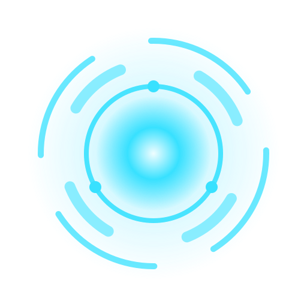
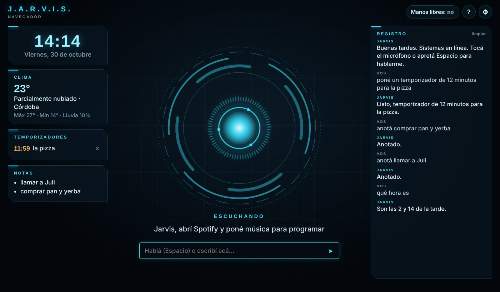

Hablale y te responde con su propia voz. Te dice la hora y el clima, pone temporizadores, anota cosas, busca en internet y charla de lo que quieras. En Windows, además, maneja tu PC: abre programas, cambia el volumen, pausa la música y hasta la apaga.
Gratis y sin cuenta · Necesita micrófono, internet y Chrome o Edge.


Tocá el micrófono o apretá Espacio. Con manos libres escucha siempre y responde cuando decís «Jarvis, …».
Con la mejor voz en español de tu equipo. En Windows usa las voces naturales de Microsoft, incluida una argentina.
Lo que no sabe al instante se lo pregunta a una IA. Recuerda la charla y entiende lo que le pedís con tus palabras.
Hora, fecha, clima de tu ciudad, temporizadores, recordatorios con hora y notas que te lee en voz alta.
Abre tus páginas, busca en Google, YouTube o Wikipedia y te pone la música que le pidas.
Abre programas y carpetas, sube o baja el volumen, pausa y pasa canciones, cierra programas, saca capturas, bloquea y apaga.
Solo en WindowsLas de color naranja funcionan con Jarvis para Windows. Para apagar, reiniciar o suspender te pide que confirmes.